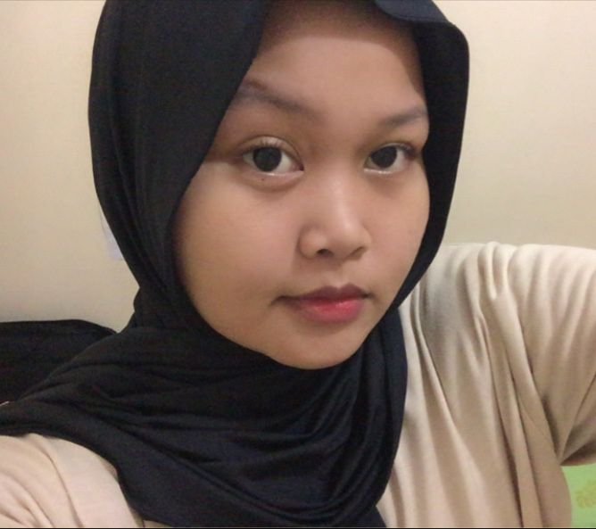

MY PROFILE

PERSONAL INFORMATION
Name: Qinanthi patricia amithayani
Date of birth: 18 march 2004
Address: Kp setu,gg johar buaran tangsel
Email: qinanthi66@gmail.com
No : 082250684201
Greetings, I am Qinanthi Patricia Amithayani. I am a 19 year old Informatics Engineering Student.
I live in South Tangerang and have an address at Jln Raya puspitek, gg johar no. 23 RT 002/ RW 002 kel. Buaran, Kec. Serpong, South Tangerang City, Banten 15316,,
During my studies, I explored various aspects of information technology, including programming, software development and database management.
In addition, I have fairly good analytical skills and am able to identify and solve problems effectively.
I like to work in a team and have good communication skills, which allow me to collaborate well with colleagues.
I am very enthusiastic about continuing to learn and keep abreast of the latest developments in the field of information technology.
I believe that the ability to continuously learn and adapt to change is the key to becoming a successful professional.